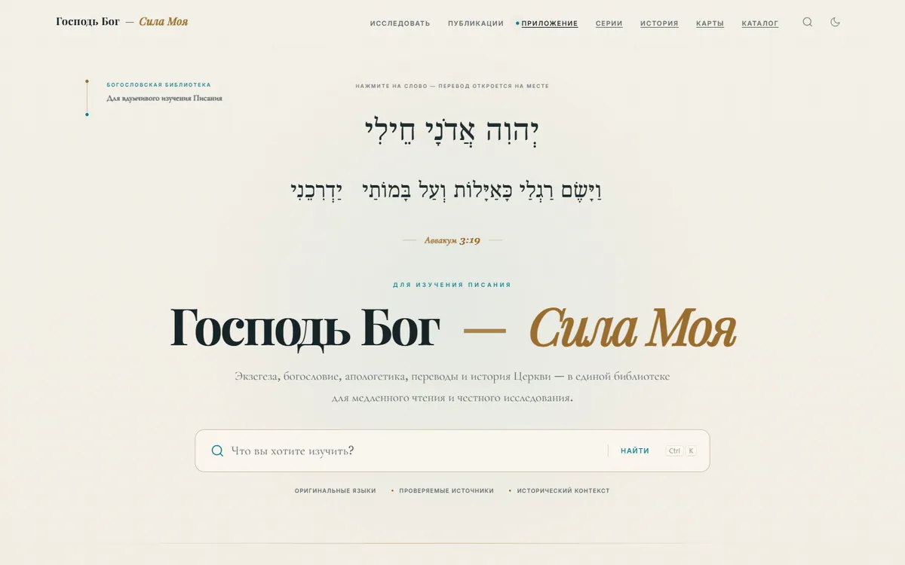
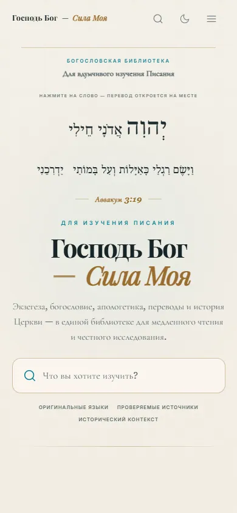
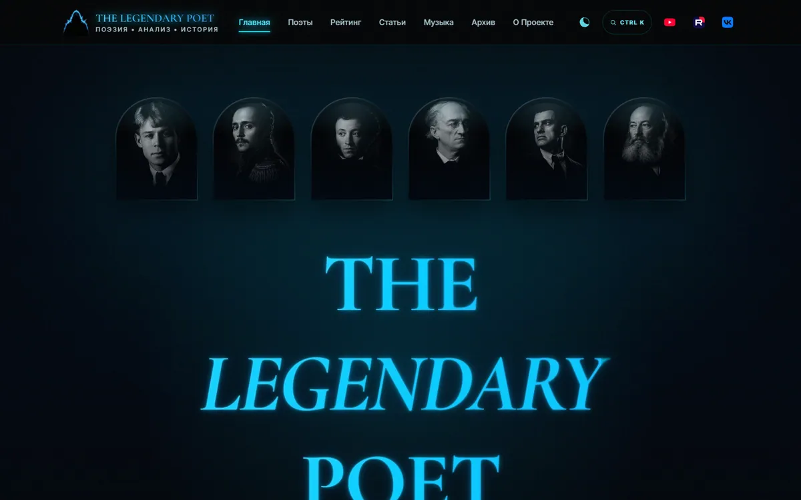
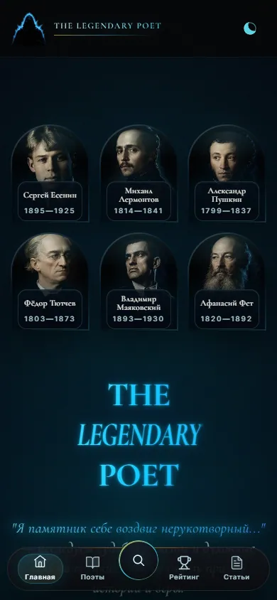
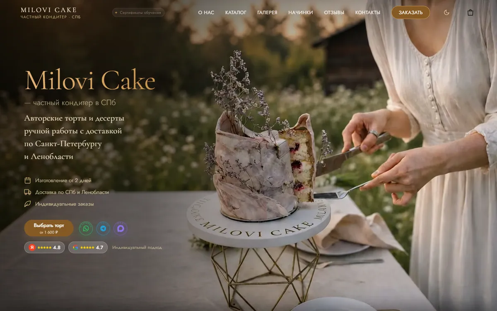
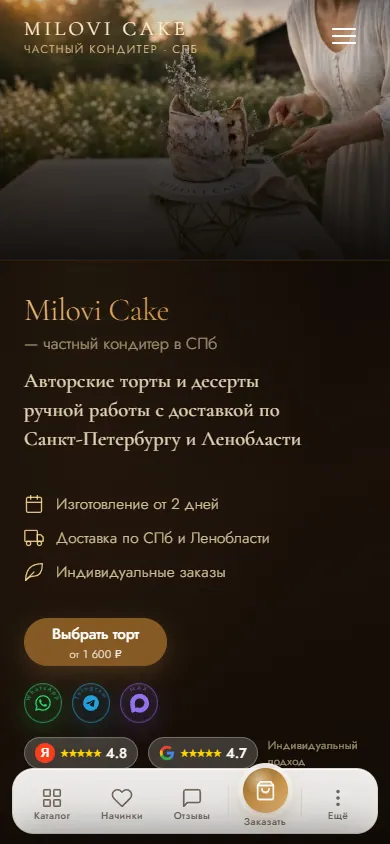
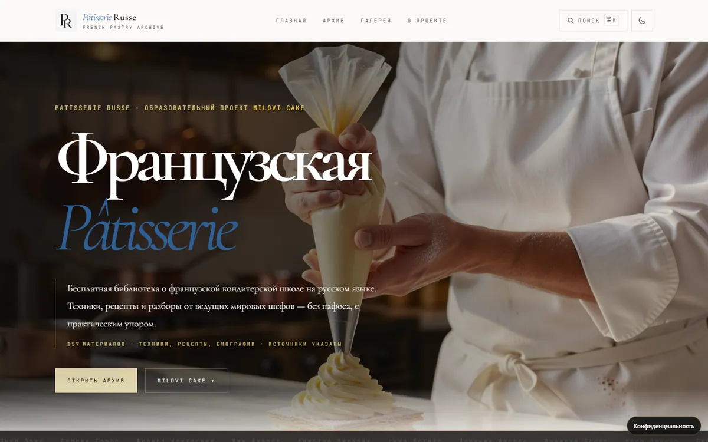
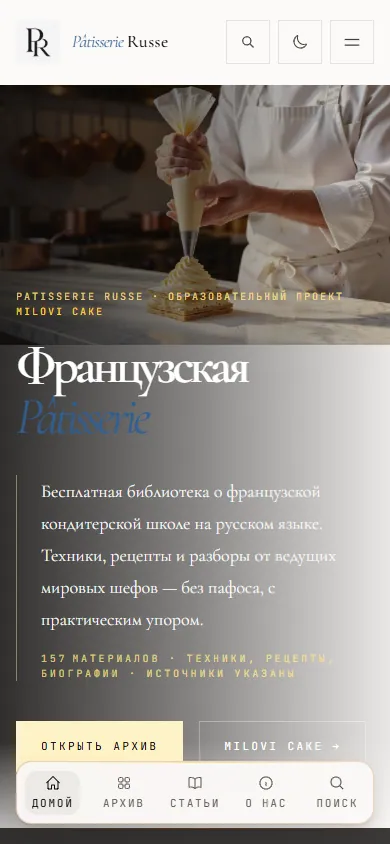
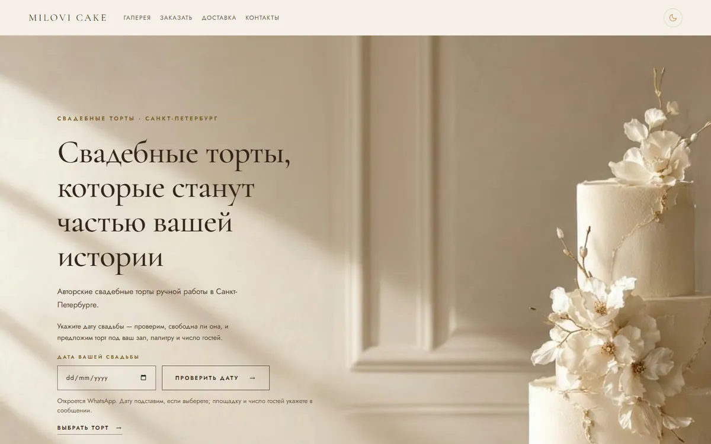
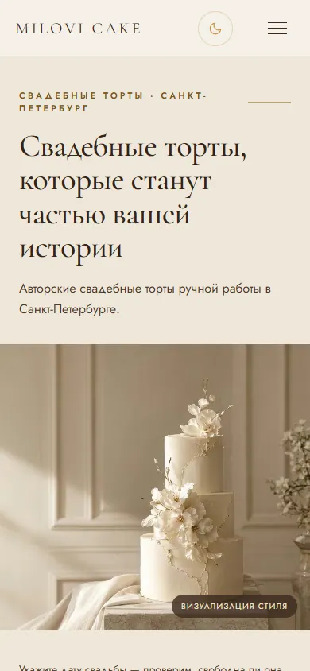

Господь Бог — сила моя
Исследования, атласы, чтение офлайн и браузерная озвучка. Astro, JavaScript, ONNX; модель Vosk — сторонняя, слой ударений адаптирован для сайта.
Строю цифровые продукты, исследовательские библиотеки и медиасистемы с помощью ИИ-агентов. Проектирую архитектуру, задаю контракты, определяю визуальное направление, проверяю качество и отвечаю за выпуск в продакшн.
5 продуктов, 241 workflow и 1 390 файлов — срез 1 ноября 2026. 221 596 API-доступных запусков в десяти репозиториях — с начала 2026 года по 3 ноября 2026, 21:05 UTC. Ранее удалённые запуски не учитываются.
Рабочие сайты, исследовательская инфраструктура и производственные инструменты. Ссылки ведут на существующие продукты или репозитории.
Исследования, атласы, чтение офлайн и браузерная озвучка. Astro, JavaScript, ONNX; модель Vosk — сторонняя, слой ударений адаптирован для сайта.
Редакционный сайт о русской поэзии, собственный API на Cloudflare Worker + D1, материалы и медиапроекты.
Статический PWA-сайт кондитерского бизнеса, SEO-архитектура с 14 географическими страницами на учётном срезе.
Французская кондитерская школа: структурированные редакционные материалы и статическая публикация.
Система управления видео, описаниями, очередями и кросс-платформенной публикацией с контролем операций.
Реестры источников, исследовательские материалы и автоматические проверки доказательств перед релизом.
Для библиотеки, поэтического архива и коммерческого сайта не подходит один универсальный шаблон. Мне важно найти характер продукта, задать направление, проверить композицию и добиться цельного оформления — без эффектов ради эффектов.
Моя роль: постановка визуальной задачи, выбор направления, оценка типографики, композиции и мобильного поведения, замечания и повторная приёмка.
Граница авторства: изображения, код, верстка и варианты интерфейсов частично создавались с помощью ИИ и других инструментов. Эти кейсы не подтверждают самостоятельное владение Figma, проведение UX-исследований или рост конверсии.


Господь Бог — Сила Моя · сайт в работе · 05.11.2026
Светлая бумажная фактура, сдержанный золотой акцент, исторические языки и крупный наборный заголовок формируют настроение научной библиотеки, а не развлекательного портала.
Что важно проверить дальше: удобство длинного чтения, навигацию и визуальную согласованность интерактивных элементов на телефоне.
Посмотреть действующий сайт ↗

The Legendary Poet · действующий сайт · 05.11.2026
Тёмная среда, холодный голубой свет и арочные портреты задают самостоятельную культурную идентичность. Это осознанно иной характер, чем у академической библиотеки.
Незакрытый компромисс: выразительный заголовок на широком экране конкурирует с содержанием; мобильные подписи и навигация требуют постоянной проверки читаемости.
Посмотреть действующий сайт ↗

Milovi Cake · действующий сайт · 05.11.2026
Вместо стандартного набора карточек — фактура десерта, реальная сцена подачи и спокойные шоколадно-золотистые оттенки. Сайт должен продавать работу кондитера, а не набор графических эффектов.
Незакрытый компромисс: разноцветные знаки мессенджеров и рейтингов функциональны, но местами нарушают единство палитры.
Посмотреть действующий сайт ↗

Pâtisserie Russe · действующий сайт · 05.11.2026
Сочетание крупной антиквы, фотографии процесса и свободного пространства ориентирует на чтение и исследование. Это самостоятельный визуальный язык внутри экосистемы Milovi Cake.
Что требует внимания: на узких экранах сообщения о согласии на аналитику могут закрывать значительную часть первого экрана.
Посмотреть действующий сайт ↗

Свадебные торты · концептуальный визуальный пример на живой странице · 05.11.2026
Айвори, мягкое освещение, воздушная композиция и крупная типографика передают настроение камерного премиального события без агрессивных рекламных приёмов.
Граница доказательства: стилизованное изображение торта на странице помечено как визуализация. Его нельзя выдавать за фотографию уже изготовленного заказа.
Посмотреть действующую страницу ↗Об уровне компетенции. Эти работы подтверждают опыт визуальной постановки задач, отбора и критической приёмки решений при AI-assisted разработке. Они не заменяют самостоятельное дизайн-портфолио в Figma, исследования с пользователями или подтверждённые метрики продаж. Сравнения «до/после» появятся только при наличии датированных исходных версий. Скриншоты показывают состояние действующих страниц на 5 ноября 2026 года.
Не выдаю ИИ-сгенерированный код за собственноручно написанный. Моя работа — требования, архитектура, управление агентами, редактура, проверка результатов, релиз и ответственность.
Критерии готовности, источники истины и запреты на недоказанные утверждения до начала разработки.
CI, тесты, воспроизводимые свидетельства, контроль прав и расхождений между кодом и продакшном.
Сверка фактического релиза, работающих ссылок и состояния публичного продукта после слияния.
В портфолио указаны проверяемые технические срезы, а не продажи, охваты или выручка без доступа к соответствующей аналитике. Озвучка Vosk — интеграция сторонней технологии Alpha Cephei, не авторская нейросеть.
Публичные проекты и технические доказательства доступны без регистрации. Для связи используйте открытый профиль GitHub.
Открыть профиль GitHub ↗